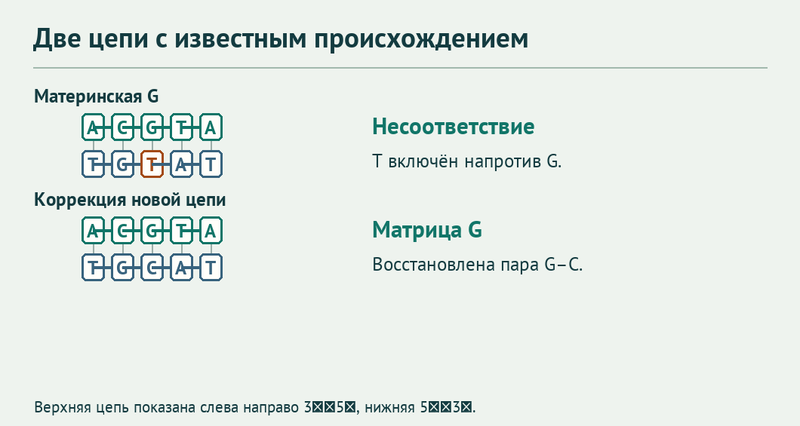
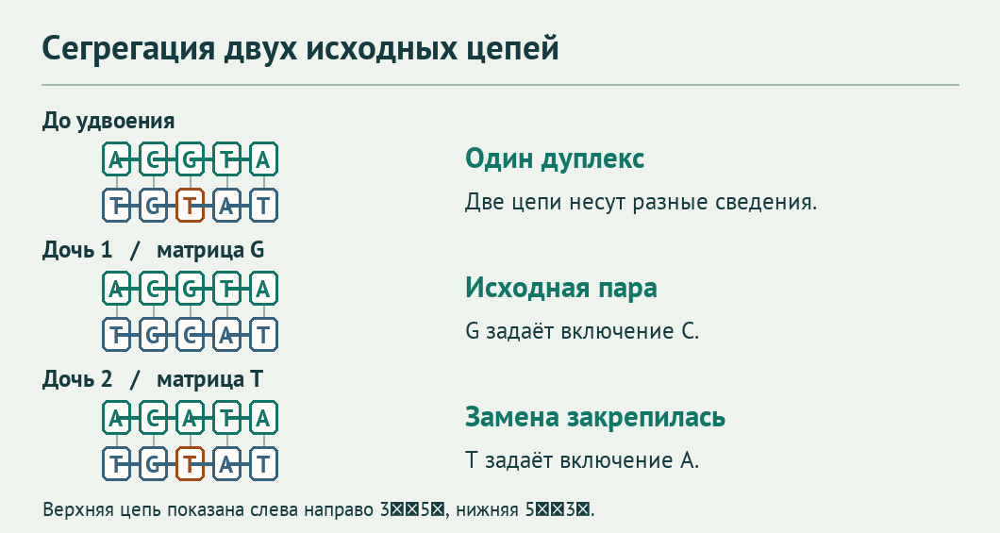
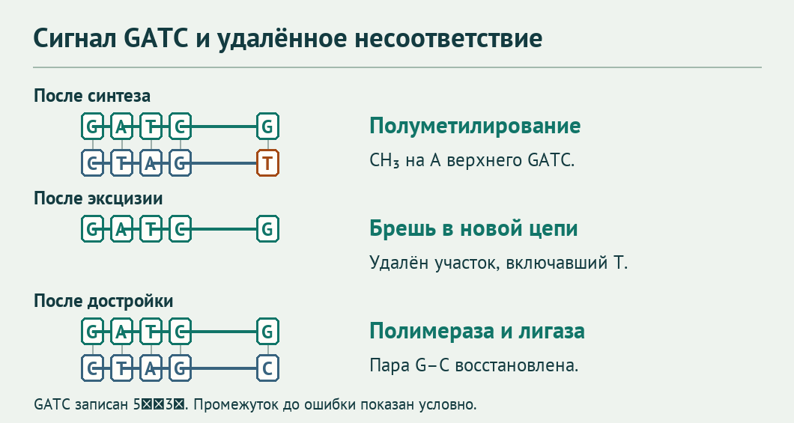
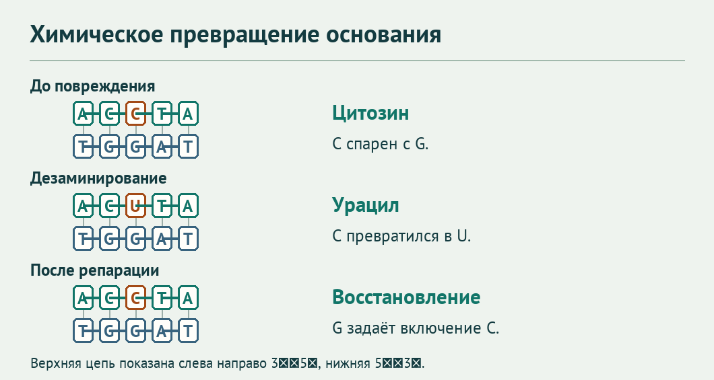
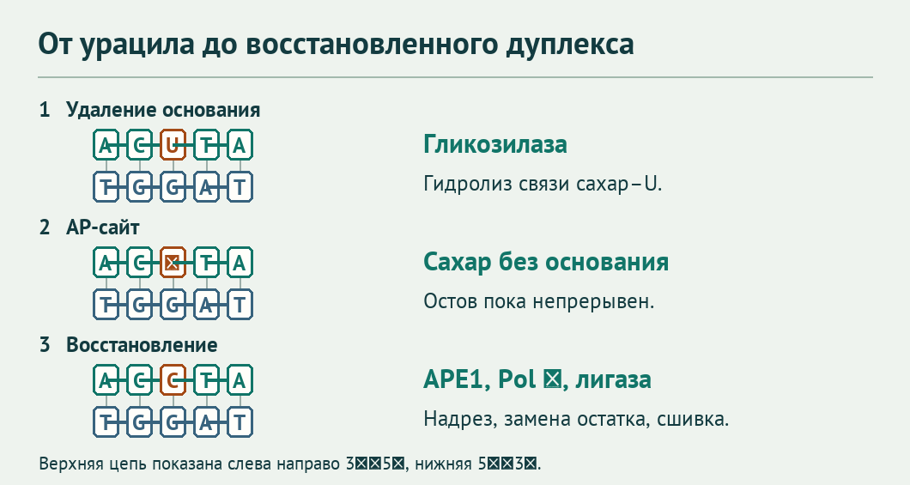
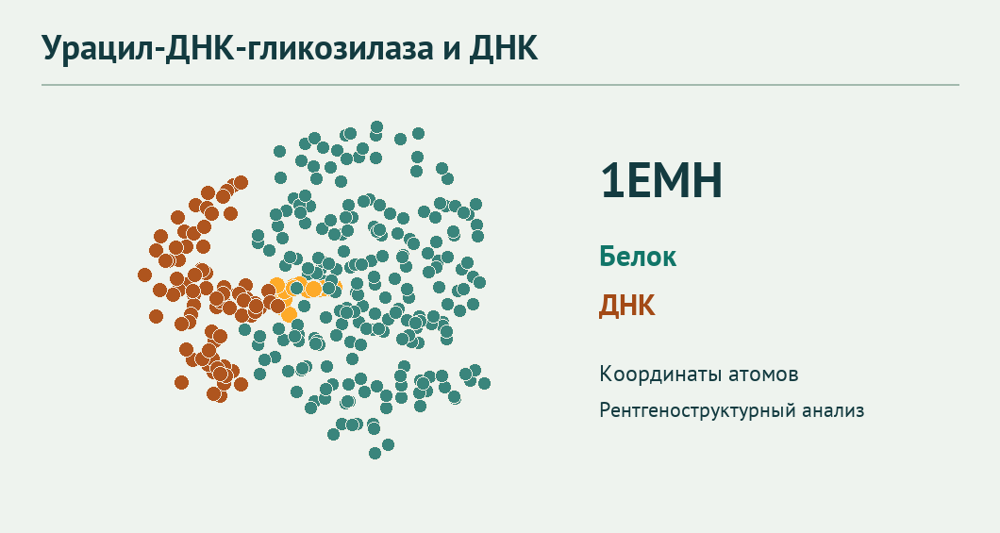
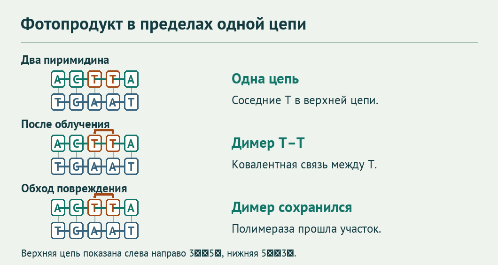
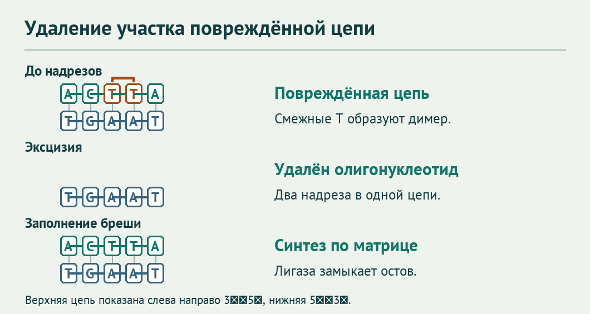
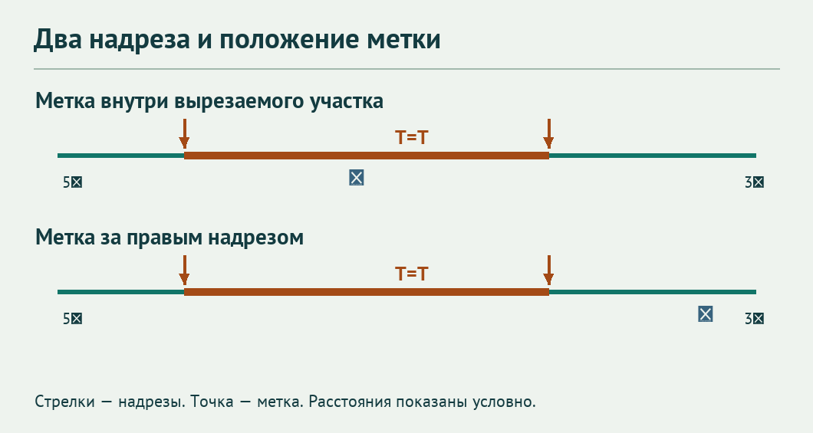
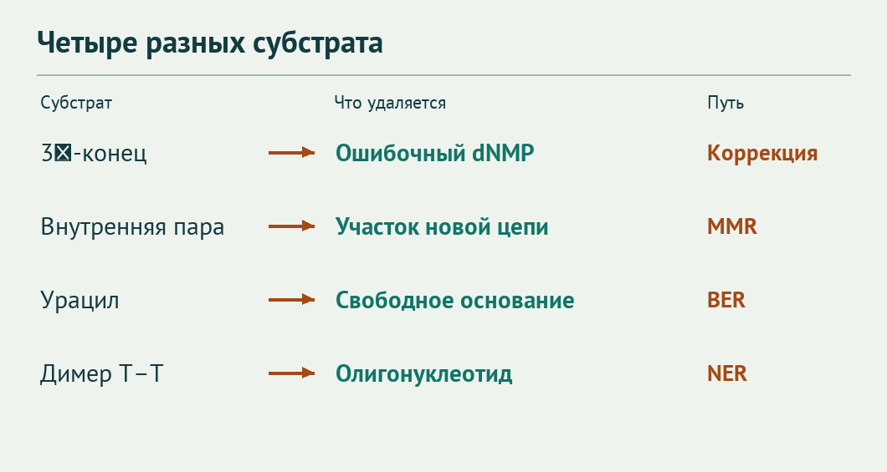

Какая из двух букв ошибочна?
ДНК-полимераза включила T напротив матричной G.

Оба основания химически обычны, но пара G·T нарушает геометрию дуплекса. На схеме верхняя цепь унаследована от исходной молекулы, нижняя только что синтезирована. Эти сведения позволяют восстановить исходную пару G–C. Если убрать обозначения возраста цепей, возможен и другой ответ: матричной могла быть T.
Увидев только G·T, можно ли определить, какое основание удалить?
Нет. Если матрицей была G, следует заменить T на C. Если матрицей была T, следует заменить G на A. Происхождение несоответствия и выбор цепи — два отдельных вопроса.
Как полимераза выбирает нуклеотид
В полимеразном центре сходятся матричное основание, 3′-OH праймера и входящий дезоксирибонуклеозидтрифосфат.

При правильной пространственной ориентации 3′-OH атакует α-фосфат, образуется фосфодиэфирная связь и освобождается пирофосфат. Различия в связывании субстратов и скорости химической реакции вместе определяют селективность. Редкая конфигурация ошибочной пары может пройти этот отбор.
Почему подсчёта водородных связей недостаточно для объяснения точности?
Центр полимеразы чувствителен к форме пары и взаимному расположению реагирующих групп. Даже связавшийся нуклеотид может покинуть центр до образования связи.
Коррекция на растущем 3′-конце
После ошибочного включения следующая реакция удлинения часто замедляется.

Конец праймера отделяется от матрицы и переходит в экзонуклеазный центр. Гидролиз последней фосфодиэфирной связи освобождает ошибочный дезоксирибонуклеозидмонофосфат. Восстановленный 3′-OH возвращается в полимеразный центр, где синтез продолжается в направлении 5′→3′. У Pol δ и Pol ε эукариот оба активных центра находятся в каталитической субъединице. У бактериальной Pol III коррекцию обеспечивает субъединица ε.
Как изменится положение 3′-конца сразу после коррекции?
Праймер станет на один нуклеотид короче. Направление экзонуклеолиза — 3′→5′. Следующий нуклеотид снова присоединится к свободной 3′-OH-группе.
Когда возникает устойчивая замена
Если G·T сохранилась до следующей репликации, каждая из двух цепей становится матрицей.

Напротив G включается C, напротив T — A. При последующем безошибочном синтезе обе пары воспроизводятся. В одной из двух дочерних молекул произошла фиксация замены G–C → A–T. Сама пара A–T геометрически нормальна. Чтобы установить, что последовательность изменилась, требуется сравнение с предковой последовательностью.
Сколько из четырёх молекул будут иметь изменённую пару ещё через один цикл?
Две из четырёх, если все молекулы одинаково успешно реплицируются, а новых ошибок и отбора нет. Смена G на A в одной и той же ориентации цепи — транзиция.
Как MutS распознаёт несоответствие
После ухода полимеразы ошибочная пара оказывается внутри дуплекса.

Система mismatch repair (MMR) распознаёт несовпадения оснований и короткие петли вставок или делеций. В кристаллической структуре MutS кишечной палочки димер охватывает ДНК, а дуплекс изгибается вблизи G·T. Узнавание и последующие АТФ-зависимые перестройки позволяют привлечь MutL. Структура комплекса показывает геометрию контакта, но сама по себе не устанавливает, какая цепь была синтезирована последней.
Повернуть молекулярную модель
Зелёный — белок, оранжевый — ДНК. Проекция по экспериментальным координатам. Ползунок поворачивает модель вокруг вертикальной оси.
Что позволяет установить структура 1E3M?
Она показывает взаимное расположение MutS и ДНК с G·T. Выбор удаляемой цепи устанавливают в отдельном опыте с различимыми цепями.
Выбор цепи у E. coli
Сразу после репликации участки GATC некоторое время полуметилированы: аденин родительской цепи уже несёт метильную группу, а в новой цепи Dam-метилаза ещё не успела её поставить.

MutS и MutL связывают распознавание несоответствия с действием MutH. MutH надрезает неметилированную цепь у GATC. Хеликаза UvrD и экзонуклеаза участвуют в удалении участка до ошибки и за её пределы. Полимераза заполняет брешь, лигаза соединяет концы.
Должна ли ошибочная пара входить в последовательность GATC?
Нет. GATC даёт сигнал для выбора цепи на расстоянии. Удаляемый участок должен захватить несоответствие. Система Dam–MutH характерна для E. coli и части родственных бактерий.
Как ориентируется MMR у человека
Комплекс MutSα (MSH2–MSH6) узнаёт многие одиночные несоответствия и небольшие петли.

Разрывы непрерывности новой цепи и ориентация скользящего зажима PCNA помогают направить надрезы эндонуклеазы MutLα (MLH1–PMS2). В одном из восстановленных путей EXO1 удаляет участок, Pol δ достраивает его, лигаза замыкает остов. Особенно нагляден пример ещё не сшитых фрагментов Оказаки. Механизмы маркировки ведущей цепи изучать сложнее.
В опыте с G·T перенесли исходный разрыв с цепи T на цепь G. Какие продукты ожидаются при коррекции по сигналу разрыва?
При удалении участка цепи T продуктом станет G–C. При удалении участка цепи G продуктом станет A–T. Именно зависимость результата от положения разрыва проверяет выбор цепи.
Почему меняется длина повторов
На участке коротких тандемных повторов праймер и матрица могут снова спариться с небольшим сдвигом.

Если одна повторяющаяся единица образует петлю в новой цепи, новая цепь длиннее. Если петля лежит в матрице, полимераза может пропустить эту единицу. При недостаточности MMR такие различия чаще сохраняются. Изменчивость длины микросателлитов служит измеримым следствием нарушенной коррекции.
В матрице пять повторов CA, в продукте четыре. Где могла образоваться петля?
В матрице. Один матричный повтор оказался вне спаренного участка и был пропущен. Для вывода о механизме по реальному образцу нужны дополнительные данные.
От C к U без участия полимеразы
При гидролитическом дезаминировании цитозина образуется урацил.

Прежде нормальная пара C–G превращается в U·G даже в клетке, которая в этот момент не копирует ДНК. Урацил химически отличается от четырёх обычных оснований ДНК. Если он сохранится до репликации, полимераза может включить напротив него A. Дезаминирование 5-метилцитозина даёт T, поэтому в этом случае клетка сталкивается с химически обычным основанием в паре T·G.
Всегда ли пара G·T свидетельствует об ошибке полимеразы?
Нет. Она может возникнуть при дезаминировании 5-метилцитозина. Для восстановления в этом случае требуется удалить T. Происхождение дефекта меняет интерпретацию той же схемы.
Как из ДНК удаляется одно основание
При короткозаплаточной эксцизионной репарации оснований (BER) у человека урацил-ДНК-гликозилаза выворачивает урацил из спирали и гидролизует N-гликозидную связь.

Сахарофосфатный остов остаётся непрерывным, но в нём появляется AP-сайт — дезоксирибоза без основания. AP-эндонуклеаза APE1 надрезает остов с 5′-стороны AP-сайта. Pol β удаляет остаток дезоксирибозофосфата и заполняет брешь. Лигаза восстанавливает непрерывность цепи. При длиннозаплаточном варианте заменяется несколько нуклеотидов.
Что обнаружится после действия только урацил-ДНК-гликозилазы?
Свободный урацил и AP-сайт при сохранённом остове. Разрыв цепи возникает на следующей стадии при действии APE1.
Урацил в кармане гликозилазы
В структуре человеческой урацил-ДНК-гликозилазы 1EMH аналог урацилсодержащего нуклеотида выведен из стека оснований.

Белок окружает вывернутое основание. Для фиксации комплекса исследователи использовали изменённый фермент и субстратный аналог. Эта структура помогает понять, как белок получает доступ к основанию в двойной спирали. Последовательность реакций восстанавливают сопоставлением структурных и биохимических данных.
Повернуть молекулярную модель
Зелёный — белок, оранжевый — ДНК. Проекция по экспериментальным координатам. Ползунок поворачивает модель вокруг вертикальной оси.
Можно ли измерить скорость удаления урацила по одной кристаллической структуре?
Нет. Структура фиксирует взаимное расположение атомов в одном состоянии. Для скорости нужны измерения количества субстрата или продукта во времени.
Какая связь возникает при УФ-повреждении
Ультрафиолетовое излучение может вызвать образование циклобутанового пиримидинового димера между соседними пиримидинами одной цепи.

Между их основаниями возникают ковалентные связи. Фосфодиэфирный остов при этом может оставаться непрерывным. Димер способен мешать продвижению репликативной и транскрибирующей полимераз. Обход повреждения специализированной полимеразой позволяет продолжить синтез, но сам димер остаётся в матрице.
Если синтез ДНК за димером возобновился, доказано ли удаление повреждения?
Нет. Необходимо проверить наличие самого димера. Например, Pol η может провести синтез напротив тиминового димера без его удаления.
Два надреза вокруг повреждения
При эксцизионной репарации нуклеотидов (NER) у человека к повреждению могут привести два пути.

В масштабе генома участвуют факторы распознавания XPC и, для ряда повреждений, UV-DDB. В транскрибируемой цепи сигналом служит остановка РНК-полимеразы II. После локального раскрытия ДНК с участием TFIIH и проверки повреждения XPF–ERCC1 надрезает повреждённую цепь с 5′-стороны, XPG — с 3′-стороны. Высвобождается олигонуклеотид, обычно около 24–32 нуклеотидов. Неповреждённая цепь задаёт последовательность для заполнения бреши.
Что отличает первый удаляемый продукт NER от продукта действия урацил-ДНК-гликозилазы?
При NER удаляют участок цепи с повреждением внутри. Гликозилаза при BER отделяет основание от сахара. В обоих путях завершение требует восстановления непрерывного остова.
Что можно узнать по длине продукта
В опыте Хуанга и соавторов человеческая система эксцизионной репарации вырезала участок ДНК с тиминовым димером.

Авторы картировали надрезы по обе стороны от повреждения. Для исследованного субстрата характерны надрезы примерно на 22-й фосфодиэфирной связи с 5′-стороны и шестой с 3′-стороны. Положение надрезов объясняет, как в продукт попадают и димер, и соседние неповреждённые нуклеотиды. Для других субстратов длины могут различаться.
На учебной схеме метка стоит внутри повреждённого участка. Что изменится, если поставить её далеко за обоими надрезами?
Удалённый олигонуклеотид по-прежнему образуется, но в нём не будет этой метки. Отсутствие меченой короткой полосы само по себе не доказывает отсутствия эксцизии.
Сколько ошибок доходит до следующего цикла
Оценки точности всегда относятся к заданному знаменателю: числу включённых нуклеотидов, числу репликаций локуса или числу клеточных делений.

В учебной модели на 10⁸ включений приходится 10⁴ ошибочных. Коррекция на 3′-конце удаляет 99 % ошибок, а MMR исправляет 99 % оставшихся. До следующей репликации в среднем дойдёт одно несоответствие на 10⁸ включений. Эти условные числа описывают последовательные стадии, а не универсальные константы клетки.
При том же исходном числе ошибок MMR исправляет только 90 % оставшихся. Что ожидается?
После коррекции останется 100 несоответствий. Десятая часть из них, то есть в среднем 10, сохранится. Это десятикратное увеличение относительно исходной модели.
Как различить четыре механизма
Сначала установите химическую природу субстрата и его положение.

Ошибочный нуклеотид на 3′-конце доступен корректорскому центру. Внутренняя неправильная пара после синтеза может потребовать MMR и сигнала цепи. Урацил служит субстратом гликозилазы в пути BER, а пиримидиновый димер — субстратом NER у человека. Затем укажите первый удаляемый продукт, состояние остова и источник информации для достройки. Так можно различить пути даже при одинаковой конечной последовательности.
В двух образцах восстановлена C–G. В одном промежуточном образце найден AP-сайт, в другом — удалённый участок новой цепи, содержащий T. Какие пути согласуются с данными?
В первом случае возможна BER после дезаминирования C. Во втором — направленная MMR после включения T напротив G. Одна конечная пара не позволяет установить путь без промежуточных продуктов.
Литература и структуры
Схемы построены для занятия. Модели показывают выбранные атомы из открытых координат PDB; расчёт частот использует условные числа.